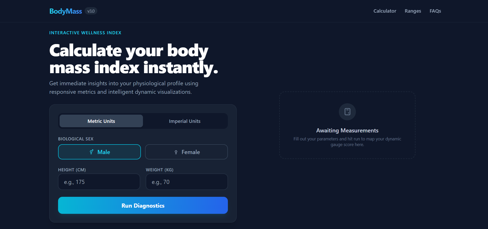

John Rey Buendia
Information Systems graduate specializing in optimizing technical workflows and designing data-driven web applications.
View My WorkAbout Me
I am a solutions-driven technology professional and an Information Systems graduate from the Computer Systems Institute (CSI). My approach centers on bridging technical execution with efficient systems analysis to solve organizational bottlenecks.
During my 486-hour deployment (OJT) at the DENR – PENRO Albay, I worked directly with ICT support teams. This gave me hands-on insights into public sector IT infrastructure, database workflows, and enterprise network setups.
Skills
- ⚡ System Analysis & Architecture Design
- ⚡ VS Code, Visual Studio 2022, XAMPP
- ⚡ Timeline Control & Agile Learning
Projects
Techs / InteractiveBudget Manager
An elegant tracking ledger structured for personal financial micro-transactions with fluid reactive balances.

BMI Calculator
Instant computation matrix processing client-side evaluations and responsive custom analytics charts.